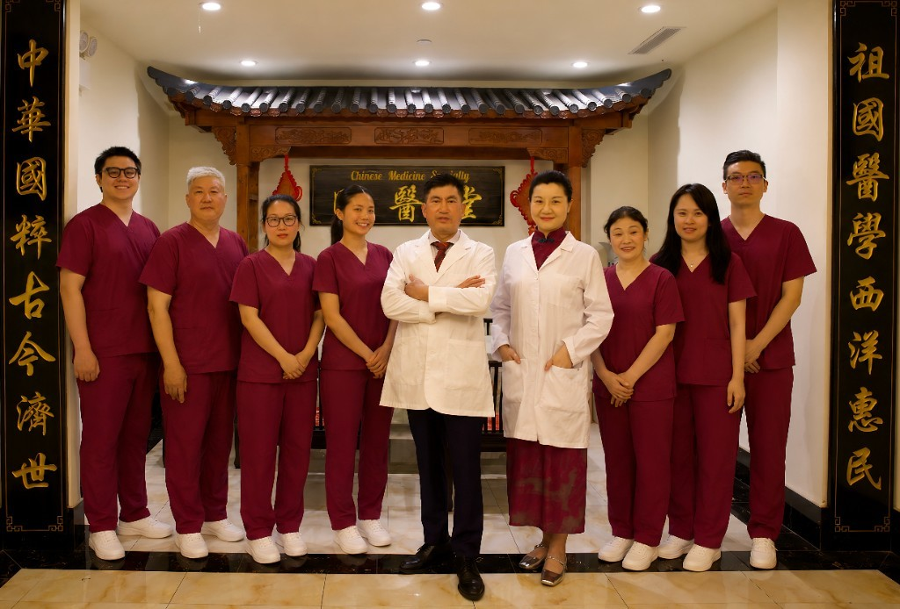

诊所介绍短片
诊所简介
法拉盛中医诊所国医堂坐落于华美大楼一层，面向 Flushing 中医与 Queens 中医就诊需求，以辨证论治与规范流程提供可信赖的中医治疗。
诊所位于法拉盛核心商圈，地铁公交直达。内设中医内科、中医妇科、中医男科、针灸科、推拿理疗科及中药房，接受多种医疗保险，前台可协助了解报销相关事宜。
临床侧重针灸、中药与推拿理疗协同：如腰痛针灸、颈椎病针灸、失眠针灸与消化调养；中医妇科月经与备孕调理；中医男科与泌尿不适辨证；并兼顾体质调养与中医减肥等体重管理诉求（需医师评估，因人而异）。

为什么选择国医堂
在纽约中医与法拉盛针灸服务中，我们强调清晰沟通、个体化方案与可预期的随访安排——从首次评估到疗程调整，全程由医师团队把关。
资深执照医师
纽约州执照针灸师与认证中医师主理诊疗，理论基础扎实，多年服务于纽约华人社区。
个体化中医方案
辨证后组合针灸、中药、艾灸、拔罐与推拿等，避免“千人一方”，疗程与强度随证型调整。
医保与前台支持
接受多种医保计划；前台可协助您了解报销与预约时段，减少到院等待不确定性。
多维中医治疗
针药推拿与理疗手段相互配合，覆盖痛症、睡眠、妇科男科、消化与皮肤等常见诉求。
患者好评
来自真实患者的反馈摘选（更多评价见「病人好评」页）。
★★★★★
后来在网上找到法拉盛国医堂，第一次由简医生和按摩师治疗后颈肩明显轻松，艾灸过程也很专业。
— 颈椎调理患者
★★★★★
长期肩痛反复，经几次针灸推拿与艾灸后老毛病明显缓解，推荐给有需要的朋友。
— L W***
加微信 · 集赞送好礼
转发国医堂内容至朋友圈，集满 38 赞可获赠针灸＋推拿 1 次或免费中医问诊 1 次。添加微信后发送截图与姓名，前台核销；每人限一次。
预约到院｜免费咨询诉求
首次就诊建议先在线预约或来电说明主要症状与方便时段；前台将为您匹配医师门诊。急症请先赴急诊或拨打 911。